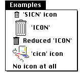

Changing the Appearance of Items in a Menu
You can change the appearance of an item in a menu using Menu Manager routines. For example, you can change the font style, text, or other characteristics of menu items. You can also enable or disable a menu item.Most of the Menu Manager routines that get or set characteristics of a particular menu item require three parameters:
- a handle to the menu record of the menu containing the desired menu item
- the number of the menu item
- a variable that either specifies the data to set or identifies where to return information about that item
Enabling and Disabling Menu Items
Using theEnableItemandDisableItemprocedures, you can enable and disable specific menu items or an entire menu. You pass as parameters to these two procedures a handle to the menu record that identifies the desired menu and either an item number that identifies the particular menu item to enable or disable or a value of 0 to indicate that the entire menu should be enabled or disabled.Your application should always enable and disable any menu items as appropriate-- according to the user's content--before calling
MenuSelectorMenuKey. For example, you should enable the Paste command when the scrap contains data that the user can paste. (Listing 3-19 on page 3-76 shows code that adjusts an application's menus.)When you disable or enable an entire menu, call
DrawMenuBarto update the menu bar. TheDrawMenuBarprocedure draws the menus in the menu bar according to their current enabled state and as they are defined in the current menu list.If you disable an entire menu, the Menu Manager dims the menu title at your application's next call to
DrawMenuBarand dims all items in the menu when it displays the menu. If you enable an entire menu, the Menu Manager enables only the menu title and any items that you did not previously disable individually; the Menu Manager does not enable any item that your application previously disabled by callingDisableItemwith that menu item's item number. For example, if all items in your application's Edit menu are enabled, you can disable the Cut and Copy commands individually usingDisableItem. If you choose to disable the entire menu by passing 0 as the menu item parameter toDisableItem, the menu and all its items are disabled. If you then enable the entire menu by passing 0 as the menu item parameter toEnableItem, the menu and its items are enabled, except for the Cut and Copy commands, which remain disabled. In this case, to enable the Cut and Copy commands, you must enable each one individually usingEnableItem.You can use
DisableItemto disable items that aren't appropriate at a given time. For example, you can disable the Cut and Copy commands when the user has not selected anything to cut or copy and disable the Paste command when the scrap is empty.This code enables the File menu, disables the Cut and Copy commands in the Edit menu, and disables the application-defined menu Colors.
VAR menu: MenuHandle; menu := GetMenuHandle(mFile); {get a handle to the File menu} EnableItem(menu, 0); {enable File menu and any items } { not individually disabled} DrawMenuBar; {update menu bar's appearance} menu := GetMenuHandle(mEdit); {get a handle to the Edit menu} DisableItem(menu, iCut); {disable the Cut command} DisableItem(menu, iCopy); {disable the Copy command} menu := GetMenuHandle(mColors);{get a handle to Colors menu} DisableItem(menu, 0); {disable Colors menu & all } { items in it} DrawMenuBar; {update menu bar's appearance}If you disable or enable an entire menu, callDrawMenuBarwhen you need to update the menu bar's appearance. If you do not need to update the menu bar immediately, you can use theInvalMenuBarprocedure instead ofDrawMenuBar, thus reducing flickering in the menu bar. Rather than drawing the menu bar twice as in the previous example, you can useInvalMenuBarinstead ofDrawMenuBar, causing the Event Manager to redraw the menu bar the next time it scans for update events. TheInvalMenuBarprocedure is available in System 7 and later. See page 3-114 for additional details on theInvalMenuBarprocedure.Changing the Text of an Item
You can get or set the text of a menu item using Menu Manager routines.To get the text of a menu item, use the
GetMenuItemTextprocedure. For example, you can use theGetMenuItemTextprocedure to get the text of a menu item that you added to a menu usingInsertResMenuorAppendResMenu.To set the text of a menu item, use the
SetMenuItemTextprocedure. You can use
theSetMenuItemTextprocedure as a convenient way to change the text of a menu command that allows the user to toggle between two states. For example, if your application has a menu command that allows the user to either show or hide the Clipboard window, depending on whether the window is currently showing, you can change the text of the menu item at the appropriate time using theSetMenuItemTextprocedure.Listing 3-9 changes the text of a menu item from Hide Clipboard to Show Clipboard or vice versa, based on the state of an application-defined global variable (
gToggleState) that holds the state information.Listing 3-9 Changing the text of a menu item
PROCEDURE MyToggleHideShow; VAR myMenu: MenuHandle; item: Integer; itemString: Str255; BEGIN myMenu := GetMenuHandle(mEdit); item := iToggleHideShow; IF gToggleState = kShow THEN BEGIN GetIndString(itemString, kMyStrings, kShowClipboard); gToggleState := kHide; END ELSE BEGIN GetIndString(itemString, kMyStrings, kHideClipboard); gToggleState := kShow; END; SetMenuItemText(myMenu, item, itemString); END;Note that if you use theSetMenuItemTextprocedure, you should define the text of the menu item in a string resource or string list resource (for example, using an'STR 'or'STR#'resource). This makes your application easier to localize.Changing the Font Style of Menu Items
You can change or get the font style of a menu item using theSetItemStyleorGetItemStyleprocedure. To set the style of a menu item, specify a handle to the menu record of the menu containing the menu item whose style you want to set, specify the number of the menu item to set, and specify the desired style.You specify the style using values from the set defined by the
Styledata type:TYPE StyleItem = (bold, italic, underline, outline, shadow, condense, extend); Style = SET OF StyleItem;You can set the style of a menu item to zero, one, or more than one of the styles defined by theStyleItemdata type. You can set the style of a menu item to the empty set to obtain the plain font style.Listing 3-10 shows code that sets the style of menu items listed in an application's
Style menu.Listing 3-10 Setting the font style of menu items
VAR menu: MenuHandle; itemStyle: Style; menu := GetMenuHandle(mStyle); {get a handle to the Style menu} itemStyle := [italic]; SetItemStyle(menu, iItalic, itemStyle);{set to italic style} itemStyle := [bold]; SetItemStyle(menu, iBold, itemStyle);{set item to bold style} itemStyle := [bold, Italic]; SetItemStyle(menu, iBoldItal, itemStyle);{bold & italic style} itemStyle := []; SetItemStyle(menu, iPlain, itemStyle);{set item to plain style}To get the style of a menu item, you can use theGetItemStyleprocedure.Changing the Mark of Menu Items
You can change or get the mark of a menu item using theSetItemMarkorGetItemMarkprocedure. To set the mark of a menu item to a checkmark, you
can use either theCheckItemor theSetItemMarkprocedure.To set the mark of a menu item, specify a handle to the menu record of the menu containing the item whose mark you want to set, specify the number of the menu
item to set, and specify the mark to use as the marking character of the menu item.You typically use checkmarks and dashes in menus that contain commands that set attributes and that you have grouped in accumulating groups. For example, you use a combination of checkmarks and dashes in the Style menu to indicate whether the selection contains more than one style. Figure 3-8 on page 3-14 shows an example of using checkmarks and dashes in a menu. "Groups of Menu Items" beginning on page 3-13 gives guidelines for determining how to group your menu items.
You specify the mark of the menu item by passing a character as one of the parameters to the
SetItemMarkprocedure. You should use only the standard marking characters, such as the checkmark, diamond, or dash, in your menu items; avoid using other marks that might confuse the user. You can use the constants listed here to specify that the item has no mark or to set the marking character to a checkmark or diamond:CONST noMark = 0; {no marking character} checkMark = $12; {checkmark} diamondMark = $13; {diamond symbol}As another example of the use of marks in menus, Listing 3-11 shows code that sets the mark of items in an application-defined Directory menu. It sets the marking character of the menu item of the last directory accessed to a checkmark, sets the marking character of the second-last directory accessed to the diamond mark, and removes the mark from the third-last directory accessed.Listing 3-11 Adding marks to and removing marks from menu items
VAR menu: MenuHandle; itemMark: Char; {get handle to Directory menu} menu := GetMenuHandle(mDirectory); itemMark := CHR(checkMark); SetItemMark(menu, gLastDir, itemMark); {set mark to checkmark} itemMark := CHR(diamondMark); SetItemMark(menu, gOldLastDir, itemMark); {set mark to diamond} itemMark := CHR(noMark); SetItemMark(menu, gSecondLastDir, itemMark);{remove any mark}You can also set the mark of a menu item to a checkmark using theCheckItemprocedure:VAR menu: MenuHandle; {get handle to Directory menu} menu := GetMenuHandle(mDirectory); CheckItem(menu, gLastDir, TRUE); {set to checkmark} CheckItem(menu, gSecondLastDir, FALSE);{remove checkmark or } { any other mark}Changing the Icon or Script Code of Menu Items
You can change or get the icon of a menu item using theSetItemIconorGetItemIconprocedure. You can also use these procedures to get or set the
script code of a menu item's text.To set the script code of a menu item using the
SetItemIconprocedure, you need toTo set a menu item's script code, you must also define the keyboard equivalent field of the item to $1C. If an item contains $1C in its keyboard equivalent field and a script code in its icon field, the Menu Manager draws the item in the script identified by the script code value if the corresponding script system is installed.
- specify a handle to the menu record of the menu containing the item whose script code you want to set
- specify the number of the menu item to set
- specify the script code
To set the icon of a menu item using the
SetItemIconprocedure, you need toThe icon number that you specify to
- specify a handle to the menu record of the menu containing the item whose icon you want to set
- specify the number of the menu item to set
- specify the icon number (the Menu Manager uses the icon number to generate the resource ID of the icon)
SetItemIconmust be a value from 1 through 255 for color icons or icons, from 1 through 254 for small icons and reduced icons, or 0 to specify that the item doesn't have an icon. The Menu Manager adds 256 to the number you specify and uses this calculated number as the icon's resource ID. For example, if you specify the icon number as 5, the Menu Manager uses the Resource Manager to find the icon with resource ID 261. The Menu Manager first looks for an icon resource of type'cicn'; if it can't find one with the calculated resource ID number (or if the computer doesn't have Color QuickDraw), it looks for a resource of type'SICN'if the keyboard equivalent field contains $1E; otherwise, it looks for an'ICON'resource.Use either an
'ICON'or'SICN'resource if you want to provide only a black-and-white icon. In addition, provide a'cicn'resource if you want the Menu Manager to use a color icon when Color QuickDraw is available. Figure 3-34 shows examples of icons in a menu item generated from icon resources: an'SICN'resource, an'ICON'resource, an'ICON'resource reduced to fit in a 16-by-16 bit rectangle, and a'cicn'resource.Figure 3-34 Icons in menu items

The Menu Manager automatically fits the icon in the menu item according to your specifications. If the Menu Manager uses a
'cicn'resource, it automatically enlarges the enclosing rectangle of the menu item according to the rectangle specified in the'cicn'resource. If the Menu Manager uses an'ICON'resource and the item specifies thenokeyconstant as the keyboard equivalent, the Menu Manager enlarges the rectangle of the menu item to fit the 32-by-32 bit'ICON'resource. You can request that the Menu Manager reduce an'ICON'resource to the size of a 16-by-16 bit small icon by specifying a value of $1D as the item's keyboard equivalent. To request that the Menu Manager use an'SICN'resource instead of an'ICON'resource, specify a value of $1E as the item's keyboard equivalent.This code sets the icon of a menu item to a specified icon.
VAR menu: MenuHandle; itemIcon: Byte; itemIcon := 5; menu := GetMenuHandle(mWeather); {set the icon for this item in the Weather menu} SetItemIcon(menu, iBeachWeather, itemIcon);Listing 3-12 shows the Rez description of three menu items, each of which contains icons. The first menu item has an icon with resource ID 261 (5 plus 256) and is defined by a resource type of either'cicn'or'ICON'. The second menu item has an icon with resource ID 262 (6 plus 256) and is identified by either a'cicn'resource or an'ICON'resource; however, in this case, the value of $1D requests the Menu Manager to reduce the'ICON'resource to a small icon. The third menu item has an icon with resource ID 263 (7 plus 256) and is defined by either a'cicn'resource or an'SICN'resource.Listing 3-12 Specifying icons for menu items
#define mWeather 138 resource 'MENU' (mWeather, preload) { mWeather, textMenuProc, 0b0000000000000000001011101100111, enabled, "Weather", { "Beach Weather", /*item has icon or color icon */ /* with icon number 5*/ 5, nokey, nomark, plain; "Ski Weather", /*item has reduced icon or color */ /* icon with icon number 6*/ 6, $1D, nomark, plain; "Kite-Flying Weather",/*item has small icon or */ /* color icon with icon number 7*/ 7, $1E, nomark, plain } };See the chapter "Finder Interface" in this book for details on how to create icons.